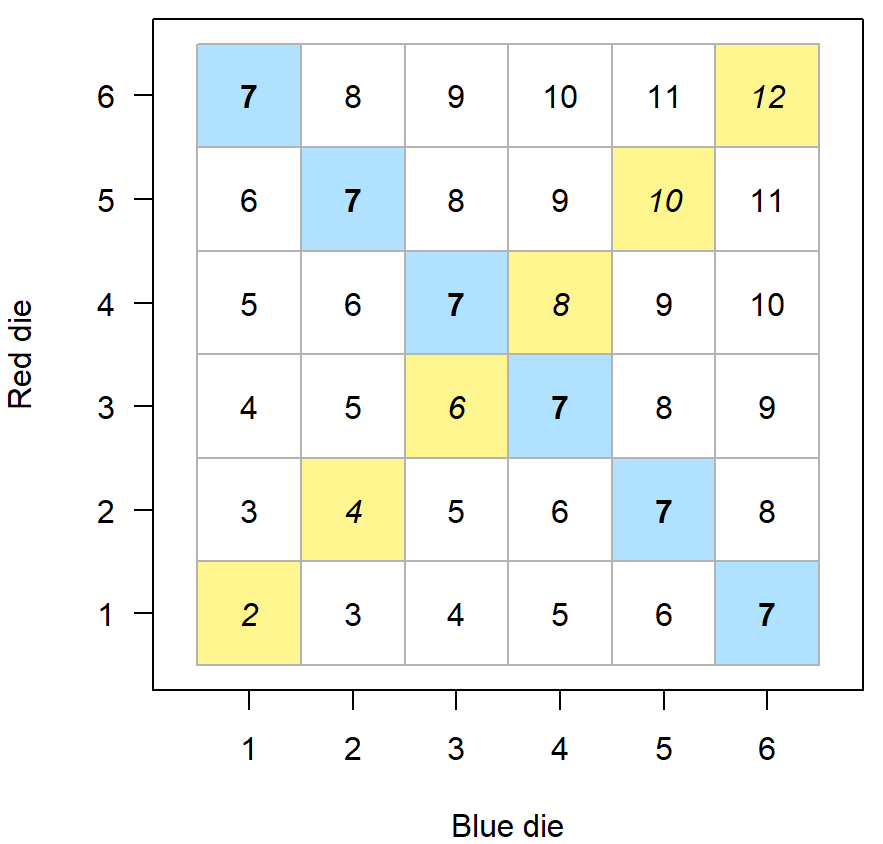
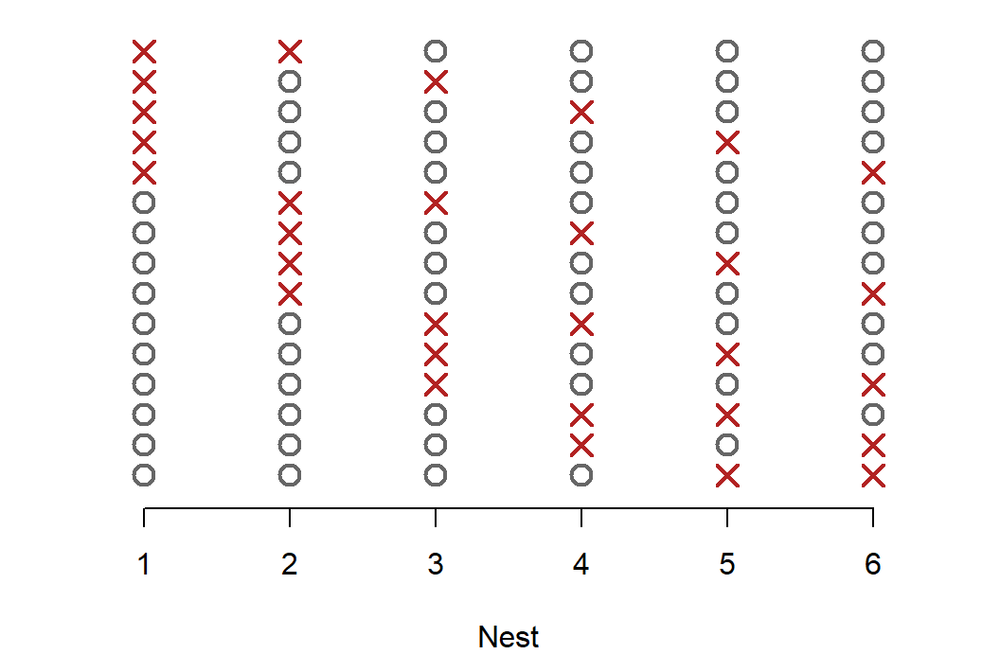
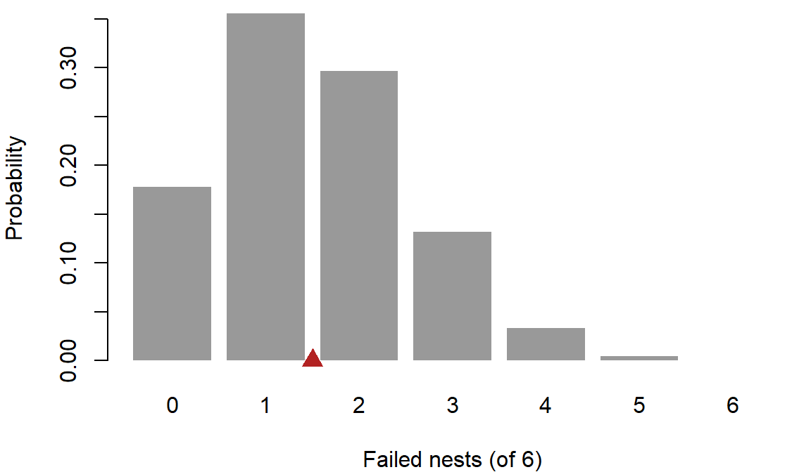
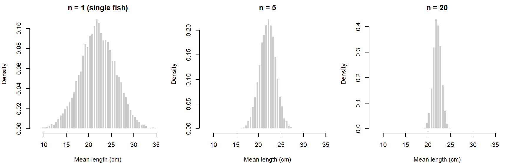
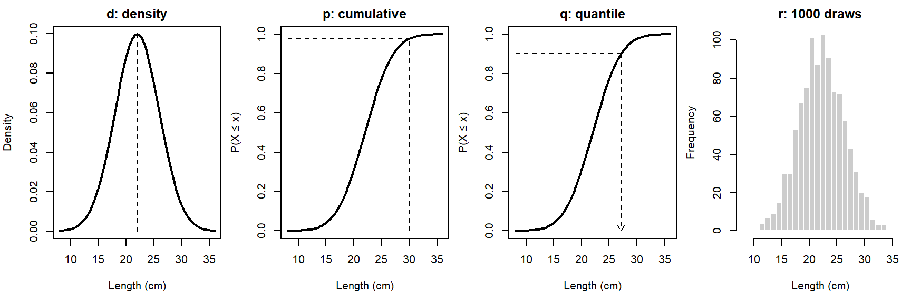
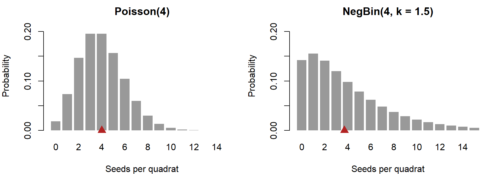
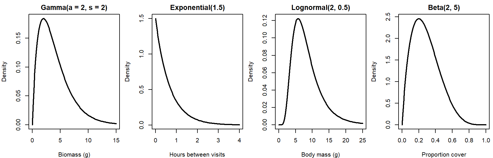
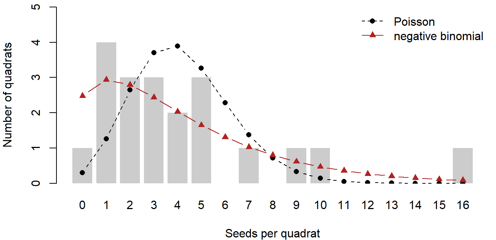
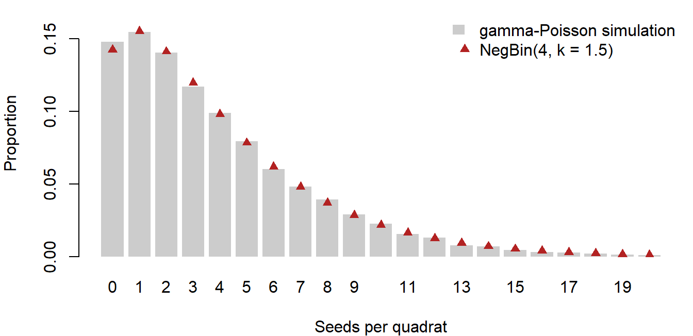

Week 4: Counting, Expectation, and Probability Distributions
NRES 746
Sept. 14-16, 2026
R code from this page is also in the companion script. No packages beyond base R are needed.
This material follows Bolker, Ecological Models and Data in R, sections 4.4 (analyzing probability distributions, pp. 155-160), 4.5 (the bestiary of distributions, pp. 160-182), and 4.6 (compounding distributions, pp. 182-188). Factorials are in Appendix A.5 (p. 482).
Counting, random variables, and expectation
Most of the distributions we use for ecological data are built from two ingredients: counting the ways an outcome can happen, and weighting each outcome by its probability. This part covers counting (permutations, combinations, and the binomial coefficient), the difference between a probability and a probability density, and the two numbers that summarize a distribution most often: its expected value and its variance.
1. Big picture

A data-generating model (MODELS) has two halves: a deterministic function for the expected value, and a probability distribution for the noise around it. Earlier weeks built the deterministic half (the bestiary of functions). This week builds the noise half: what a probability distribution is, how to summarize one, and which named distributions fit which kinds of ecological data.
2. WOD: a probability puzzle
The WOD (a short warm-up exercise at the start of class) asked three things: whether a sum of 7 or doubles is more likely when rolling two dice; how many 5-number lottery tickets can be drawn from the numbers 1 to 30; and a guess at whether 25 people in a room are more likely than not to share a birthday.
For the dice, list the sample space. Two dice that can be told apart give \(6 \times 6 = 36\) equally likely ordered pairs:

Six cells sum to 7 (blue, bold) and six are doubles (yellow, italic), so both have probability \(6/36 = 1/6\). Seven is the only sum that ties doubles, because no other sum can be made in six ways.
Question: With two eight-sided dice, which sum is most likely, and does it tie, beat, or lose to doubles?
The lottery and the birthday guess both need counting rules, which come next.
3. Counting arrangements
Multiplication rule. If one choice can be made in \(a\) ways and a second in \(b\) ways, the pair can be made in \(a \times b\) ways. The 36 dice outcomes are \(6 \times 6\).
Permutations (order matters). A crew will resurvey 4 of 12 ponds and must also decide the order of visits. There are 12 choices for the first pond, 11 for the second, and so on:
\[12 \times 11 \times 10 \times 9 = \frac{12!}{8!}.\]
In general, the number of ordered selections of \(k\) items from \(N\) is
\[P(N, k) = \frac{N!}{(N - k)!}.\]
Combinations (order doesn't matter). If the crew only cares which 4 ponds get visited, each set of 4 has been counted once for each of its \(4! = 24\) orderings. Divide that out:
\[\binom{N}{k} = \frac{P(N, k)}{k!} = \frac{N!}{k!\,(N - k)!}.\]
12 * 11 * 10 * 9 # ordered visits## [1] 11880choose(12, 4) # sets of 4 ponds## [1] 495choose(30, 5) # lottery tickets from the WOD## [1] 142506Forgetting to divide by \(k!\) is the usual error. Ask: is \(\{3, 8, 14, 20, 29\}\) a different ticket from \(\{29, 20, 14, 8, 3\}\)? If not, you need combinations.
The binomial coefficient
\(\binom{N}{k}\) is read "\(N\) choose \(k\)," and it is the coefficient in the binomial probability mass function. Suppose each of \(N = 6\) nests fails independently with probability \(p = 0.25\). One particular outcome, say nests 1 and 4 fail and the rest hatch, has probability
\[p^2 (1 - p)^4 = 0.25^2 \times 0.75^4.\]
But "2 of 6 failed" can happen in \(\binom{6}{2} = 15\) different ways:

Each row is one arrangement (an X marks a failed nest), and each has the same probability. Adding them up gives the binomial pmf:
\[P(X = k) = \binom{N}{k} p^k (1 - p)^{N - k}.\]
choose(6, 2) * 0.25^2 * 0.75^4## [1] 0.2966309dbinom(2, size = 6, prob = 0.25)## [1] 0.2966309\(\binom{N}{k}\) counts the arrangements; \(p^k (1 - p)^{N - k}\) is the probability of any one of them.
4. The birthday problem
Are 25 people more likely than not to include two who share a birthday? Assume 365 equally likely birthdays and independence. "At least one match" can happen in many ways (one pair, two pairs, three people on one day), so compute its complement instead:
\[P(\text{at least one match}) = 1 - P(\text{all different}).\]
Assign birthdays one person at a time. Person 2 must avoid 1 taken day, person 3 must avoid 2, and so on:
\[P(\text{all different}) = \frac{365}{365} \cdot \frac{364}{365} \cdots \frac{341}{365} = \prod_{i=0}^{24} \frac{365 - i}{365}.\]
n_people <- 25
p_all_diff <- prod((365 - 0:(n_people - 1)) / 365)
1 - p_all_diff## [1] 0.5686997choose(n_people, 2)## [1] 300A shared birthday has probability 0.569. The intuitive comparison, 25 people against 365 days, is the wrong one. What matters is the number of pairs, since any pair can be the one that matches: 25 people make 300 pairs, each with a 1/365 chance. For a rough rule, \(P(\text{match}) \approx 1 - \exp(-\text{pairs} / 365)\).
The widget computes the exact probability for any group size and fills simulated groups with random values. The buttons change the number of equally likely values, for problems where the "days" are something else (the genotypes in the discussion below, for example).
Question: With 365 values, find the smallest group with better than even odds of a match. How many pairs does it have? Switch to 10,000 values and find the smallest such group again. What do the two pair counts have in common?
5. Random variables and their distributions
A random variable is a rule that turns an outcome into a number: the number of failed nests, the length of a trout, the pH of a pond. A probability distribution says how likely each value is.
Discrete random variables take separate values, usually counts. A probability mass function (pmf) gives \(P(X = x)\) for each value, and these probabilities sum to 1:
x_nest <- 0:6
p_nest <- dbinom(x_nest, size = 6, prob = 0.25)
round(p_nest, 3)## [1] 0.178 0.356 0.297 0.132 0.033 0.004 0.000sum(p_nest)## [1] 1
You can read a probability straight off the bar chart: \(P(X = 2)\) is the height of the third bar. The red triangle marks the distribution's mean, 1.5 failed nests, which falls between two possible outcomes (see expectation and variance below).
Continuous random variables take any value in a range. The chance of any exact value is zero. Bolker's example (p. 156): a pH meter reading "7.9" really says the pH is somewhere between 7.82 and 7.98. So for continuous variables we describe probability per unit of \(x\), a probability density \(f(x)\). Probabilities are areas under the density curve:
\[P(a \le X \le b) = \int_a^b f(x)\, dx.\]
Densities are not probabilities, and they can be larger than 1. If pH is equally likely anywhere between 7.0 and 7.1 (and nowhere else), the density is 10 per pH unit across that range, since the area (\(10 \times 0.1\)) must equal 1:
dunif(7.05, min = 7.0, max = 7.1)## [1] 10The cumulative distribution function (CDF), \(F(x) = P(X \le x)\), turns areas into differences: \(P(a \le X \le b) = F(b) - F(a)\). For brook trout lengths that are normal with mean 22 cm and SD 4 cm:
pnorm(24, mean = 22, sd = 4) - pnorm(20, mean = 22, sd = 4) # P(20 <= X <= 24)## [1] 0.3829249dnorm(22, mean = 22, sd = 4) # a density, per cm## [1] 0.09973557A trout between 20 and 24 cm has probability 0.383. The value 0.0997 is the height of the density curve at 22 cm, in units of probability per cm; it is not the probability that a trout is 22 cm long.
The widget shades an interval under the trout density (left) and shows the same probability as a gap in the CDF (right).
Question: Shrink the SD to about 0.1 cm. The curve now rises above a height of 1. Is the model broken? Then, at any SD, narrow the interval width toward zero and watch the "Area" and "Height × width" cards. What happens to each, and what does that say about the probability of one exact length?
6. Expectation and variance
Expectation. Suppose 40 survey routes each checked 6 nests and recorded how many failed. The ordinary average of the 40 counts can be computed from the tabulated counts \(c(x)\) (Bolker eq. 4.4.2):
\[\bar{x} = \frac{\sum_i x_i}{N} = \sum_x x \, \frac{c(x)}{N}.\]
set.seed(4)
routes <- rbinom(40, size = 6, prob = 0.25)
counts <- table(factor(routes, levels = 0:6))
counts##
## 0 1 2 3 4 5 6
## 4 15 11 7 2 1 0mean(routes)## [1] 1.775sum(0:6 * counts / 40)## [1] 1.775Replace each observed frequency \(c(x)/N\) with its probability, and the average becomes the expected value of the distribution:
\[E[X] = \sum_x x \, P(X = x) \qquad\text{or}\qquad E[X] = \int x \, f(x)\, dx.\]
sum(x_nest * p_nest) # binomial: N p = 1.5## [1] 1.5integrate(function(x) x * dexp(x, rate = 1.5), 0, Inf) # exponential: 1 / rate## 0.6666667 with absolute error < 8.1e-05\(E[X]\) is a weighted average of the possible values, and it is the balance point of the distribution: cut the bar chart above out of cardboard and it balances on the red triangle. The sample mean (here 1.775) is computed from data and varies from sample to sample; \(E[X]\) (here 1.5) is a fixed property of the distribution.
Expectation is linear. For constants \(a\) and \(b\) and any random variables \(X\) and \(Y\),
\[E[aX + b] = aE[X] + b, \qquad E[X + Y] = E[X] + E[Y].\]
Variance is the expected squared distance from the mean, \(\text{Var}(X) = E[(X - \mu)^2]\) with \(\mu = E[X]\). Expanding the square and applying linearity gives a formula that is easier to compute:
\[\text{Var}(X) = E[X^2 - 2\mu X + \mu^2] = E[X^2] - 2\mu E[X] + \mu^2 = E[X^2] - \mu^2.\]
mu_nest <- sum(x_nest * p_nest)
sum((x_nest - mu_nest)^2 * p_nest) # E[(X - mu)^2]## [1] 1.125sum(x_nest^2 * p_nest) - mu_nest^2 # E[X^2] - mu^2## [1] 1.1256 * 0.25 * 0.75 # binomial formula N p (1 - p)## [1] 1.125Variance is in squared units (failed nests squared, cm²), so we often report the standard deviation \(\sqrt{\text{Var}(X)}\), or the coefficient of variation \(\text{CV} = \text{SD}/\text{mean}\). Shifting a variable moves its mean but not its spread, and rescaling multiplies the variance by the square of the factor:
\[\text{Var}(aX + b) = a^2 \, \text{Var}(X).\]
Other summaries. The mean is the first moment and the variance is the second central moment. The third and fourth central moments measure skewness (lopsidedness) and kurtosis (peakedness). The median splits the probability in half and the mode is the most likely value. For right-skewed distributions, generally mode < median < mean (Bolker p. 159); for the nest distribution the mode is 1 and the mean is 1.5.
Question: The expected number of failed nests is 1.5, but no survey can record 1.5 failures. In what sense is 1.5 "expected"?
Discussion
- A pond's pH is modeled as normal with mean 7.9 and SD 0.02. The density at 7.9 is 19.95. A colleague says the model must be wrong, because no probability can exceed 1. What would you tell them?
- Genetic mark-recapture studies identify each bear from a genotype in a hair sample. Suppose two unrelated bears share a genotype by chance with probability 1 in 10,000. A study genotypes 150 bears. How worried should the study be that two different bears get the same ID, and what would you change in the study if the answer were "very"?
Bonus: computing on the log scale
The birthday probability can also be written with factorials:
\[P(\text{all different}) = \frac{365!}{(365 - n)! \, 365^n}.\]
Typed directly into R, this fails, because \(365!\) is far beyond the largest number a computer stores:
factorial(365)## [1] Inf365^25## [1] 1.141094e+64The fix is to work with logarithms, where products become sums and huge numbers become manageable. lfactorial() returns \(\log(n!)\) without ever computing \(n!\):
log_p <- lfactorial(365) - lfactorial(365 - 25) - 25 * log(365)
exp(log_p)## [1] 0.4313003p_all_diff## [1] 0.4313003Working on the log scale and exponentiating only at the end is a habit worth forming. Products of many small probabilities run into the opposite problem (they round to zero), and that happens every time we multiply the probabilities of many data points together, which we will do constantly later in the semester.
Probability distributions
A named distribution is a model for the noise in data, and each comes with a story about how the data arose. This part opens with the WOD on the sample mean, then covers R's four functions for every distribution, the discrete and continuous distributions used most in ecology, and how to choose among them from the process that generated the data.
1. WOD: expectation and the sample mean
The WOD used brook trout lengths with mean \(\mu = 22\) cm and variance \(\sigma^2 = 16\) cm². The population mean \(\mu\) is a fixed number (a parameter). The average \(\bar{x}\) of 5 trout you catch is a statistic: catch a different 5 and it changes, so it is a random variable with its own distribution.
For \(n\) independent measurements, \(\bar{X} = \frac{1}{n}\sum X_i\), and the rules from section 6 give
\[E[\bar{X}] = \frac{1}{n} \sum_{i=1}^n E[X_i] = \mu, \qquad \text{Var}(\bar{X}) = \frac{1}{n^2} \sum_{i=1}^n \text{Var}(X_i) = \frac{\sigma^2}{n}.\]
The second step adds the variances, which requires the measurements to be independent. The standard deviation of \(\bar{X}\) (the standard error) is \(\sigma / \sqrt{n}\): four times as many fish halve it.
Simulation confirms the algebra. Draw 10,000 samples of 5 trout and look at the spread of their means:
set.seed(746)
xbar_5 <- replicate(10000, mean(rnorm(5, mean = 22, sd = 4)))
var(xbar_5) # theory: 16 / 5 = 3.2## [1] 3.268698sd(xbar_5) # theory: 4 / sqrt(5)## [1] 1.807954
Question: The variance formula assumed the five trout were independent. Suppose all five came from one pool, where fish share food and temperature and so resemble each other. Would the variance of \(\bar{x}\) be larger or smaller than \(\sigma^2/5\)? Why?
2. Four functions for every distribution
R gives every distribution four functions, named by a prefix:
| Prefix | Returns | Trout example |
|---|---|---|
d |
probability (pmf) or density (pdf) at x | dnorm(22, 22, 4) |
p |
cumulative probability, P(X ≤ x) | pnorm(30, 22, 4) |
q |
quantile: the x with P(X ≤ x) equal to a given probability | qnorm(0.9, 22, 4) |
r |
random draws | rnorm(5, 22, 4) |
dnorm(22, mean = 22, sd = 4) # density at 22 cm## [1] 0.099735571 - pnorm(30, mean = 22, sd = 4) # P(a trout is longer than 30 cm)## [1] 0.02275013qnorm(0.9, mean = 22, sd = 4) # 90% of trout are shorter than this## [1] 27.12621set.seed(1)
rnorm(5, mean = 22, sd = 4) # five simulated trout## [1] 19.49418 22.73457 18.65749 28.38112 23.31803
About 2.3% of trout are longer than 30 cm, and 90% are shorter than 27.13 cm. The q function runs the p function backward. For discrete distributions, p includes the value itself: pbinom(2, 6, 0.25) is \(P(X \le 2)\), so \(P(X \ge 3)\) is 1 - pbinom(2, 6, 0.25).
3. Discrete distributions
Binomial, \(X \sim \text{Binom}(N, p)\): the number of successes in \(N\) independent trials, each with the same probability \(p\) (Bolker 4.5.1.1). Mean \(Np\), variance \(Np(1 - p)\). Use it when there is a known upper limit: nests that fail out of nests monitored, seeds taken out of seeds offered, infected frogs out of frogs swabbed. With \(N = 1\) it is called a Bernoulli trial.
Poisson, \(X \sim \text{Pois}(\lambda)\): counts of independent events in a fixed area or time at a constant rate, with no upper limit (seeds per quadrat, birds per point count). Its single parameter is both the mean and the variance:
\[P(X = x) = \frac{e^{-\lambda}\lambda^x}{x!}, \qquad E[X] = \text{Var}(X) = \lambda.\]
It is also the limit of the binomial when \(N\) is large and \(p\) small with \(Np = \lambda\) fixed.
Negative binomial, \(X \sim \text{NegBin}(\mu, k)\): counts that vary more than a Poisson allows, often because individuals are clumped. Bolker's parameterization (R's mu and size) has mean \(\mu\) and variance \(\mu + \mu^2/k\). Small \(k\) means strong clumping; as \(k\) grows, the negative binomial approaches the Poisson. The geometric distribution (number of failures before the first success) is a negative binomial with \(k = 1\).
Seeds per quadrat with a mean of 4, Poisson versus clumped:

The red triangles mark the means, both 4.
c(poisson = 4, negbin = 4 + 4^2 / 1.5) # variances## poisson negbin
## 4.00000 14.66667c(poisson = dpois(0, 4), negbin = dnbinom(0, mu = 4, size = 1.5)) # P(no seeds)## poisson negbin
## 0.01831564 0.14242717The two have the same mean, but the negative binomial has variance 14.67 instead of 4, and 7.8 times as many empty quadrats.
4. Continuous distributions
Normal, \(X \sim \text{Normal}(\mu, \sigma)\): symmetric and unbounded. Its two parameters are its mean and standard deviation, and its variance does not change with its mean. Averages and sums of many independent pieces tend toward a normal distribution (the central limit theorem), which is why the sample means above looked bell-shaped even for \(n = 5\).
Gamma, \(X \sim \text{Gamma}(a, s)\): positive and right-skewed (Bolker 4.5.2.3), for quantities like biomass or rainfall. With shape \(a\) and scale \(s\), the mean is \(as\) and the variance \(as^2\), so the standard deviation grows in proportion to the mean (CV \(= 1/\sqrt{a}\)). In R, use dgamma(x, shape = a, scale = s); the default second argument is the rate, \(1/s\).
Exponential, \(X \sim \text{Exp}(r)\): the waiting time between independent events that occur at rate \(r\), and a gamma with shape 1. Mean \(1/r\).
Lognormal: positive and right-skewed; \(\log X\) is normal. Like the gamma, its standard deviation grows with its mean. It gets a full treatment with trends on the log scale.
Beta, \(X \sim \text{Beta}(a, b)\): proportions and probabilities, between 0 and 1 (fraction of a quadrat covered, a survival probability). Mean \(a/(a + b)\). The beta is also the usual choice for a prior distribution on a probability.
par(mfrow = c(1, 4), mar = c(4, 4, 2, 0.5))
curve(dgamma(x, shape = 2, scale = 2), 0, 15, lwd = 2, xlab = "Biomass (g)",
ylab = "Density", main = "Gamma(a = 2, s = 2)")
curve(dexp(x, rate = 1.5), 0, 4, lwd = 2, xlab = "Hours between visits",
ylab = "Density", main = "Exponential(1.5)")
curve(dlnorm(x, meanlog = 2, sdlog = 0.5), 0, 25, lwd = 2, xlab = "Body mass (g)",
ylab = "Density", main = "Lognormal(2, 0.5)")
curve(dbeta(x, 2, 5), 0, 1, lwd = 2, xlab = "Proportion cover",
ylab = "Density", main = "Beta(2, 5)")
par(mfrow = c(1, 1))The widget plots each distribution for any parameter values, marks the mean and one standard deviation either side, and reports the variance to mean ratio and CV. "Draw 200 values" overlays a random sample.
Question: Choose Poisson and move \(\lambda\) from 1 to 20 while watching the "Variance / mean" card. Then choose Negative binomial, set the mean to 4, and move \(k\) from 0.5 to 20. Which distribution could describe counts whose variance is 3.5 times their mean, and roughly what \(k\) would it need?
5. Choosing a distribution
Choose a distribution from the process that generated the data, not from the shape of a histogram. Bolker's bestiary (section 4.5) describes each distribution by the mechanism behind it for this reason. A few questions narrow the choice quickly:
- Counts or measurements? Counts are discrete; lengths, masses, and concentrations are continuous.
- What values are possible? Is there a lower bound (zero), an upper bound (the number of trials, or 1 for a proportion)?
- How should the spread change with the mean? Constant (normal), equal to the mean (Poisson), faster than the mean (negative binomial), or proportional to the mean (gamma, lognormal)?
| Data | Consider |
|---|---|
| successes out of a known number of trials | binomial |
| counts with no fixed upper limit, events independent | Poisson |
| counts with no fixed upper limit, clumped or overdispersed | negative binomial |
| continuous, symmetric, can be negative | normal |
| continuous, positive, right-skewed | gamma or lognormal |
| waiting times between independent events | exponential |
| proportions or probabilities between 0 and 1 | beta |
Checking the mean-variance relationship. Here are seed counts from 20 quadrats (simulated):
set.seed(14)
seeds <- rnbinom(20, mu = 4, size = 1.5)
seeds## [1] 1 16 1 3 2 2 4 1 10 2 5 7 1 3 0 4 5 9 3 5c(mean = mean(seeds), variance = var(seeds), ratio = var(seeds) / mean(seeds))## mean variance ratio
## 4.200000 14.905263 3.548872A Poisson would have a variance-to-mean ratio near 1; these counts have 3.55. A quick estimate of the negative binomial's \(k\) matches the sample moments to the theoretical ones (the method of moments, Bolker 4.4.6): set \(\bar{x} = \mu\) and \(s^2 = \mu + \mu^2/k\), then solve for \(k\):
\[\hat{k} = \frac{\bar{x}}{s^2/\bar{x} - 1}.\]
m <- mean(seeds)
k_hat <- m / (var(seeds) / m - 1)
k_hat## [1] 1.647788
The Poisson expects almost every quadrat to hold 2 to 6 seeds, and gives the quadrat with 16 seeds a probability of about 7 in a million. The negative binomial with \(\hat{k} =\) 1.65 spreads its probability over the low counts and the long right tail, where these data are. The method of moments gives a first estimate; maximum likelihood (later in the semester) is the better tool.
Discussion
- A colleague models clutch size, which in this species is always 2 to 5 eggs, as Poisson with mean 3.4. What does this model get wrong about the possible values? What would you check in the data?
- The quadrat seed counts had a variance about 3.5 times their mean. Name two ecological processes that could produce the extra variance. How would each one appear in a data-generating model?
- Herbivore damage is measured on 50 leaves. One student proposes a beta distribution for the fraction of leaf area eaten; another proposes a binomial. What would each student have to believe about how the data were collected?
Bonus: where the negative binomial comes from
One way to get clumped counts: each quadrat has its own seed rate \(\lambda_i\) (some sit under a parent plant, some don't), and seeds within a quadrat are Poisson around that rate. If the rates vary as a gamma distribution with mean \(\mu\) and shape \(k\), the resulting counts are exactly negative binomial with mean \(\mu\) and overdispersion \(k\) (Bolker 4.6.3, where he notes it could be called the gamma-Poisson distribution):
\[\lambda_i \sim \text{Gamma}(k, \mu/k), \qquad Y_i \sim \text{Pois}(\lambda_i) \quad\Longrightarrow\quad Y_i \sim \text{NegBin}(\mu, k).\]
set.seed(5)
rates <- rgamma(10000, shape = 1.5, scale = 4 / 1.5) # quadrat-to-quadrat variation
y_mix <- rpois(10000, rates)
c(mean = mean(y_mix), variance = var(y_mix)) # NegBin: 4 and 4 + 4^2 / 1.5## mean variance
## 3.94710 14.29033
The bars (simulation) and triangles (dnbinom()) agree. This gives \(k\) a meaning: it is the shape of the distribution of rates among quadrats, so a small \(k\) says the quadrats differ a lot in their underlying rate. Overdispersion in counts is often a sign of unmeasured variation among sampling units, a theme that returns with random effects later in the semester.